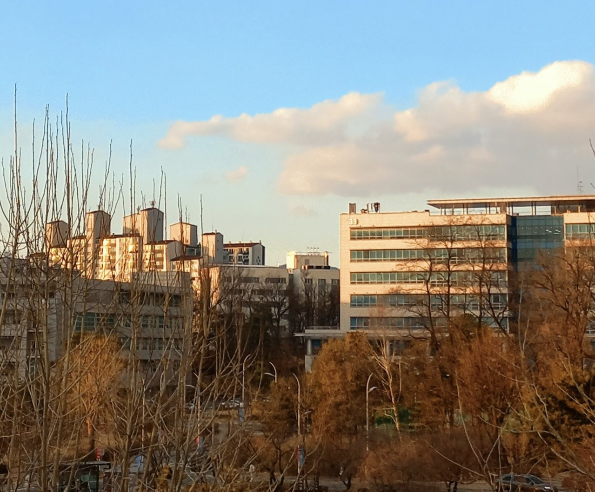
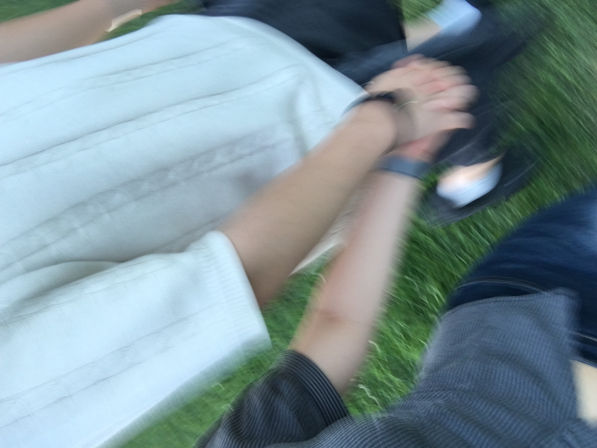
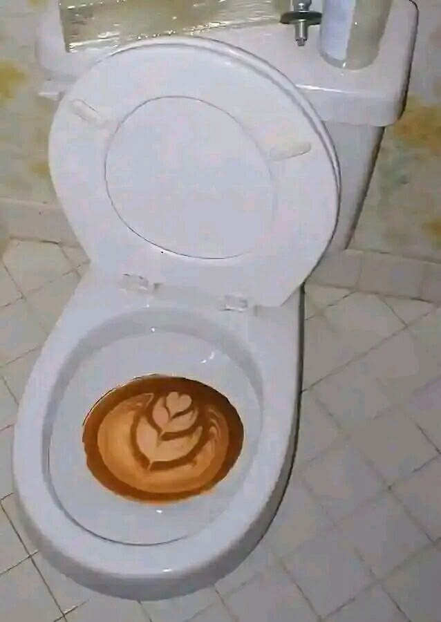

이것은 2022년 3월, 화석이 될 미래를 모르고 마냥 즐겁던 신입생 시절 나에게 벌어진 깜찍한 사건에 대한 이야기. 생각해보면 모든 것이 임계치를 넘어가 있던 상태였다. 성인이 되었고, 새로운 이들과의 만남은 즐거웠고, 붕어방의 물비린내마저 향긋하게 느껴졌다. 배출하지 못하고 모든 것을 집어삼키던 계절, 새내기의 봄은 풍요를 넘어 포화에 가까운 나날이었다.

<당시 찍은 학교 전경. 새내기의 설렘이 물씬>
과욕은 늘 파멸을 부른다는 것을 깨닫기엔 20살 소년은 너무 어렸다. 다시 오지 않을 젊음을 있는 힘껏 누리기 위해 너무도 많은 경험에 손을 뻗었다. 술자리를 가지고 다음날 무수면 상태로 전공수업을 듣고, 동방에서 숙식을 해결하며 중간중간 여자친구와 추억을 만드는 것도 잊지 않았다. 조금은 일그러진 나름대로의 갓생을 이어나갔다고 할 수 있겠다. 사건의 발단은 아주 작은 균열에서 발생했다. 여자친구와의 여행 일정이 모종의 이유로 변경되었고, 스케줄을 체크하고 가벼운 마음으로 함께 버스에 올랐다.

<아이 좋아!>
목적지였던 강릉에 도착하고, 그날 계획한 바베큐를 위해 장을 보던 중, 핸드폰에 하나의 알림이 도착했다. 도착해서는 안되는 내용과 함께...
‘삼겹살을 굽는 최적의 시간은 과연 몇분일까?’ 따위의 생각으로 가득 차있던 나에게 이건 너무나 커다란 재앙이었다. 그 많은 일정들을 제대로 정리하지 않은 명백한 나의 실책이었다. 그러게 정신 좀 차릴 걸… 후회할 시간이 없었다. 사태파악을 못하는 여자친구를 뒤로하고, 조용하고, 앉을만한, 사람들이 잘 오지 않는 장소를 찾기 시작했다.

죽고 싶을 정도의 자괴감과 함께, 하나뿐인 선택지에 몰린 가여운 신입생은 비통한 심정으로 화장실의 문을 열었다. 예상 외로 변기 칸막이 안의 인테리어는 꽤나 준수했다. 해바라기 가득한 꽃밭을 담은 액자와 함께 깔끔하게 도색된 벽은 얼핏 보면 일종의 다용도실... 같지 않았고 그냥 누가 봐도 화장실 대변부스였다. 어찌 되었든, 급히 숨을 고른 후, 변기 커버를 내리고 앉아 면접을 보기 시작했다. 바지를 입은 채로 변기에 앉는 느낌은 꽤나 색다른 경험이었으나 크게 거슬리진 않았다. 질문들은 그리 어렵지 않았고, 무브를 향한 나의 마음은 진심이었기에 최대한 빠르게 마음을 다잡고 순조롭게 질문에 답하기 시작했다.
당시 내가 있던 마트 옆에는 애슐리가 있었고, 화장실을 같이 쓰고 있었다. 시간은 6시 40분 경, 한창 저녁식사를 즐기고 있을 사람들. 애슐리는 뷔페고, 뷔페에서는 대부분의 사람들이 본인이 먹을 수 있는 한계까지 음식을 밀어넣기 마련. 즉, 과식이 그들의 평균값이라는 소리이며,
과식과 화장실 대변칸이 가지는 상관관계를 고려했을 때, 이는 상당히 주목할 만한 대목이다.
<급똥 직전의 간절함을 가지고 살아간다면 후회없는 삶을 살 수 있을 것 - 김태훈(24/무직)>
두번째 질문을 마친 시점에서 화장실에 사람들이 미친듯이 몰리기 시작했다. 한계에 몰린 그들의 소장과 대장은 건강한 소화라는 본분을 잊은 채 그저 배출하는 것을 목표로 했고, 내 양 옆 칸에서는 항문과 대장의 절규가 만들어낸 환장의 오케스트라가 펼쳐졌다. 답변 중이라 마이크를 끌 수도 없었기에, 이쯤부터 나는 내가 있는 곳이 화장실이라는 것을 숨기는 것보다, 부디 양옆에서 들리는 지옥의 하모니가 내가 내는 소리가 아니라는 것을 회장단이 알아주길 바랄 뿐이었다.
<대장이 만들어내는 절박한 절규는 상당한 굉음을 자랑한다는 인사이트를 기억하자.>
그렇게 면접을 끝내고, 사람 된 도리는 있었던 나는 학회 활동을 깔끔히 포기했으며, 그렇게 1주일이 흘렀다. 결과는 합격. 화장실에서 답변한 신입생의 간절한 절규가 그들의 마음을 울렸던 탓일까? 그렇게 나는 그토록 원하던 무브에서 활동할 수 있었고, 작년 부회장을 역임하고, 올해 3월, 무브 회장이 되었다. 인생사 새옹지마다. 결코 바랄 수 없던 최악의 상황에서도 길은 열렸고, 그렇게 찾아온 기회들을 온전히 내 것으로 만드는 게 가장 중요하다는 꺠달음을 얻은 유익한 경험이었다.